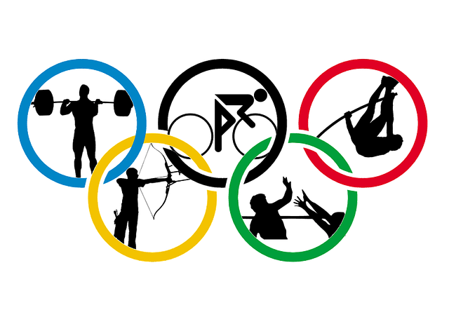

Quoi de mieux qu’un listing des jeux pour trouver sa nouvelle pratique sportive ?

Les associations sportives peuvent se regrouper en une fédération.
Une fédération sportive est un organisme dont l’objectif est d’organiser et d’encadrer la pratique d’une, ou de plusieurs disciplines sportives.
Aller donc jeter donc un oeil aux Fédérations Olympiques et Paralympiques 🙃 :
- Fédération française d’athlétisme
- Fédération française d’aviron
- Fédération française de badminton
- Fédération française de basketball
- Fédération française de boxe
- Fédération française de canoë-kayak et sports de pagaie
- Fédération française de cyclisme
- Fédération française de danse
- Fédération française de football
- Fédération française de golf
- Fédération française de gymnastique
- Fédération française de handball
- Fédération française de hockey
- Fédération française de hockey sur glace
- Fédération française de judo, jujitsu, kendo et disciplines associées
- Fédération française de la montagne et de l’escalade
- Fédération française de lutte
- Fédération française de natation
- Fédération française de pentathlon moderne
- Fédération française de roller et skateboard
- Fédération française de rugby
- Fédération française de ski
- Fédération française de surf
- Fédération française de taekwondo et disciplines associées
- Fédération française de tennis
- Fédération française de tennis de table
- Fédération française de tir
- Fédération française de tir à l’arc
- Fédération française de triathlon et disciplines enchainées
- Fédération française de voile
- Fédération française de volley
- Fédération française d’équitation
- Fédération française des sports de glace
- Fédération française d’escrime
- Fédération française d’haltérophilie, musculation
- Fédération française du sport adapté
- Fédération française handisport
Référence :
https://www.pass.sports.gouv.fr/clubs-et-structures-daccueil/le-passsport-pour-les-clubs/